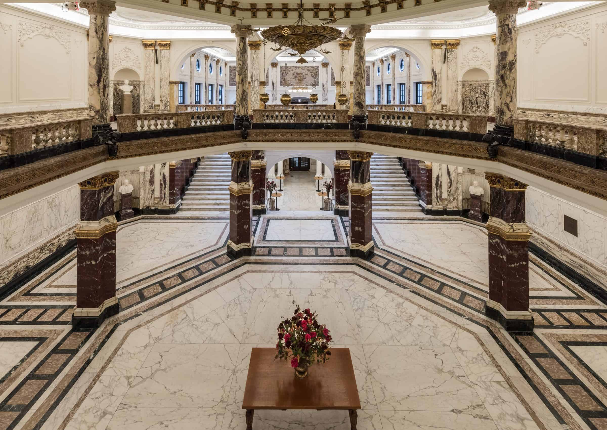
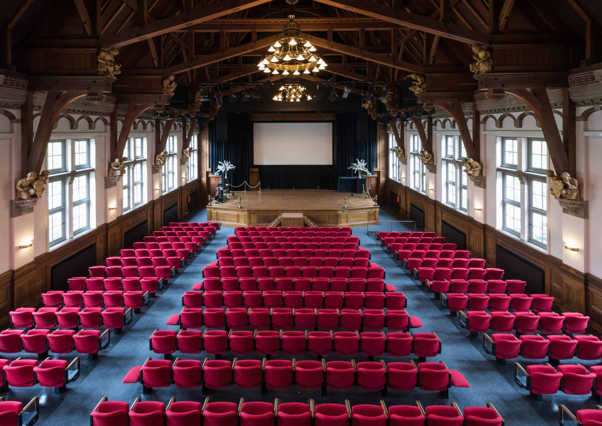

Topics
Machine Learning in Heliophysics
16 - 20 September 2019 Amsterdam, The Netherlands
Methods
Machine and Deep Learning System identification Information theory Combination of physics-based and data-driven modeling Bayesian analysis
Thank you all for a very succesful conference! Presentations are available for download
The goal of this first ML- Helio conference is to leverage the advancements happening in disciplines such as machine learning, deep learning, statistical analysis, system identification, and information theory, in order to address long-standing questions and enable a higher scientific return on the wealth of available heliospheric data. We aim at bringing together a cross-disciplinary research community: physicists in solar, heliospheric, magnetospheric, and aeronomy fields as well as computer and data scientists. ML- Helio will focus on the development of data science techniques needed to tackle fundamental problems in space weather forecasting, inverse estimation of physical parameters, automatic event identification, feature detection and tracking, times series analysis of dynamical systems, combination of physics-based models with machine learning techniques, surrogate models and uncertainty quantification. The conference will consists of classic-style lectures, complemented by hands-on tutorials on Python tools and data resources available to the heliophysics machine learning community. We expect all the participants of Machine Learning in Heliophysics to follow our Code of Conduct.
Invited Speakers
Daniel Baker, University of Colorado Joe Borovsky, Space Science Institute Cyril Furtlehner, INRIA Paris George Karniadakis, Brown University Adam Lesnikowski, NVIDIA Robert McPherron, UCLA Naoto Nishizuka, NICT (Japan) Barbara Thompson, NASA Goddard Peter Wintoft, Swedish Institute of Space PhysicsProgram
Download the poster presentations Download the oral presentations Final Program (download here) Book of abstract available here
Back to the top
14 April 2019: Abstract submission deadline
19 May: Deadline to apply for travel support
31 May: Early bird registration
16-20 September 2019: Conference
Back to the top
Registration is open on this link Registration fees: Single-day conference ticket: 150 EUR Full rate: 500 EUR
The registration fee includes an opening reception and lunches from Monday to Friday. Any attendee can only purchase one single-day conference ticket.
Invitation letter: In case you need an invitation letter, you can make a request to conference@uva.nl. Note that invitation letters can only be issued for registered participants.
The abstract submission is now close.
Back to the top
Special Issue in Frontiers in Astronomy and Space Sciences This Research Topic calls for contributions pertaining to the application of machine learning in any subfield of Heliophysics. Works that have already been presented at the ML-Helio conference are welcome. However, the call is open to all contributors, and not limited to conference participants. Authors can choose between two type of contributions: 1) a full-length research article (12,000 words and 15 Figures max) 2) a brief research report (4,000 words and 4 Figures max). In either case the paper is expected to contain novel and original research, and the guest editors will strive to ensure a rapid peer-review and publication timeline. Further information can be found on the journal website
Back to the top
Scientific Organizing Committee
Hazel Bain (CU Boulder) Monica Bobra (Stanford) Jacob Bortnik (UCLA) Enrico Camporeale (CU/CWI, chair) Mark Cheung (LMSAL) Veronique Delouille (ROB) Farzad Kamalabadi (U. Illinois) Michael Kirk (NASA) Giovanni Lapenta (KU Leuven) Stefan Lotz (SANSA) Sophie Murray (Trinity College Dublin) Bala Poduval (CWI) Pete Riley (Predictive Science Inc.) Simon Wing (APL, Johns Hopkins)
Local Organizing Committee
Mandar Chandorkar Bala Poduval Rakesh Sharma Carl Shneider Jannis Teunissen
Back to the top
The conference will be held at The Royal Tropical Institute - Koninklijk Instituut voor de Tropen (KIT), a short walk from the 17th century UNESCO World Heritage Amsterdam Canal Ring.
Address: Mauritskade 64, 1092 AD Amsterdam

